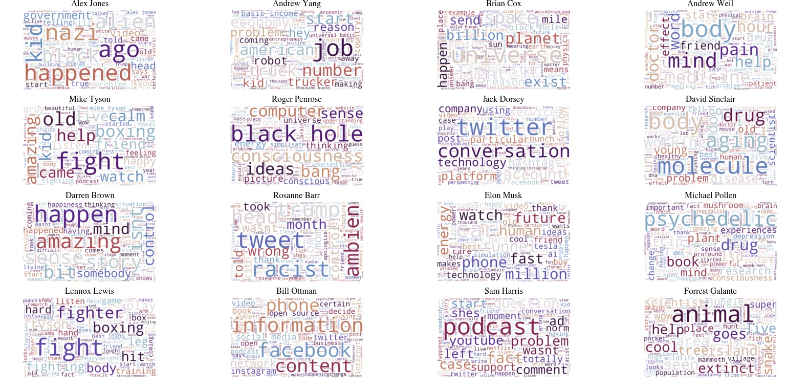
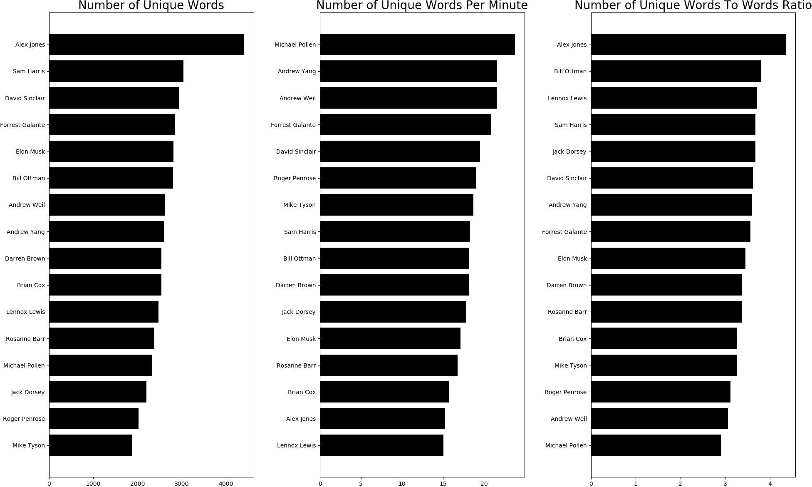

Project Description
This is part 1 of the Natural Language Processing module. The process described here largely follows the structure of Alice Zhao’s (A Dash of Data) Presentation on NLP at PyOhio 2018. This first part will mainly focused on webscraping and cleaning up data for Natural Language Processing. We will also deviate from Alice’s presentation and scrape our own dataset from Joe Rogan’s podcast transcript. The transcript from Rogan’s Podcast is preferred because of the length and the varieties of his interviews, we get some very interesting results.
The main goal for this module is to introduce the idea of vectorization of data, an essential step in regression and classification, which is the precursor to machine learning. When face with data types such as word or sound, we need to find ways to represent the data with numbers, and the numerical representation would be called Vectors for 1-dimensional values, Matrices for 2-dimensional values, and Tensors for higher dimensions. NLP relies on a package in SCIKIT-Learn, a very popular machine learning library in python, to convert words to vectors, which then enable us to do higher level analysis.
Before you begin, you must have completed the installation and visualiation modules so you have working knowledge of anaconda and regular expression.
Step 1
Download Data and Clean Data
For this exercise we will be using BeautifulSoup to scrape data off Joe Rogan’s podcast transcript site, and I have chosen 16 interviews based on the range of ideas being discussed. To get that started, import the following packages.
import requests, pickle
from bs4 import BeautifulSoup
Next we will define a function to launch BeautifulSoup and scrape the data, a list of urls to the interview transcripts, a list of speakers, and a list of the full name of the speakers.
def url_to_transcript(url):
text=[]
page = requests.get(url).text
soup = BeautifulSoup(page, 'lxml')
text = [p.text for p in soup.find(class_="content").find_all('p')]
print(url)
return text
urls = ['https://jrescribe.com/transcripts/p1255.html',
'https://jrescribe.com/transcripts/p1245.html',
'https://jrescribe.com/transcripts/p1233.html',
'https://jrescribe.com/transcripts/p1213.html',
'https://jrescribe.com/transcripts/p1227.html',
'https://jrescribe.com/transcripts/p1216.html',
'https://jrescribe.com/transcripts/p1236.html',
'https://jrescribe.com/transcripts/p1234.html',
'https://jrescribe.com/transcripts/p1198.html',
'https://jrescribe.com/transcripts/p1184.html',
'https://jrescribe.com/transcripts/p1169.html',
'https://jrescribe.com/transcripts/p1121.html',
'https://jrescribe.com/transcripts/p1260.html',
'https://jrescribe.com/transcripts/p1248.html',
'https://jrescribe.com/transcripts/p1241.html',
'https://jrescribe.com/transcripts/p1240.html',
]
speakers = ['jones', 'yang','cox','weil','tyson','penrose','dorsey','sinclair',
'brown','barr','musk','pollen','lewis','ottman','harris','galante',
]
full_names = ['Alex Jones', 'Andrew Yang', 'Brian Cox', 'Andrew Weil', 'Mike Tyson', 'Roger Penrose',
'Jack Dorsey', 'David Sinclair','Darren Brown','Rosanne Barr','Elon Musk','Michael Pollen',
'Lennox Lewis', 'Bill Ottman','Sam Harris','Forrest Galante']
text = [p.text for p in soup.find(class_="content").find_all('p')] This line in the function is the key that pulls out the text the whole interview. It finds the div tag class=”content” which contains the transcript, and strips out all the html code. Next we call the function to store all the text into the variable transcript. This is a very Pythonic syntax which is a short form for writing a loop. In the long form, it is equivalent to:
text=[]
for p in soup.find(class_="content").find_all('p'):
text.append(p.text)
And we can even break this down further into simpler components, which is to say, first find the div class named content, then find all the paragraph tags in there, then put all those paragraphs into the text variable.
text=[]
a = soup.find(class_="content")
b = a.find_all('p')
for p in b:
text.append(p.text)
Now let’s get back on track, call the function to process all the urls and get all the text into the transcript variable.
transcript = [url_to_transcript(u) for u in urls]
Again, notice the short form. This could have been written as-
transcript = []
for u in urls:
transcript.append(url_to_transcript(u))
Once its done scraping, now we “pickle” all the transcripts into our local storage. Pickling here means saving what ever is in the variable into a file, which can then be called later. The following code shows how to pickle the transcripts and using the speakers list to save each transcrption with their names. And later we retrieve the pickled data back and create a dictionary to correlate the speakers to the transcripts.
for i, s in enumerate(speakers):
with open('transcripts/' + s + ".txt", 'wb') as file:
pickle.dump(transcript[i], file)
data = {}
for i, s in enumerate(speakers):
with open('transcripts/' + s + '.txt', 'rb') as file:
data[s] = pickle.load(file)
Typing the following and see that you now have a dictionary with key:speakers and value:transcript structure.
data.keys()
However, you can see that the transcripts is a list of texts due to the function call find_all(‘p’), all html paragraphs with a <p> tag were imported as a separate list item. [:2] shows the beginning to the 3rd item in the list, and [1:5] will show the second to 6th item in the list.
data['weil'][:2]
We need to change the dictionary from value:list to value:string. We can do that with a function.
def combine_text(list_of_text):
combined_text = ' '.join(list_of_text)
return combined_text
data_combined = {key: [combine_text(value)] for (key, value) in data.items()}
Next we can put everything into a Pandas DataFrame.
import pandas as pd
pd.set_option('max_colwidth', 150)
data_df = pd.DataFrame.from_dict(data_combined).transpose()
data_df.columns = ['transcript']
data_df
Now you get a small glimpse of what the transcript look like, we now need to clean up all the text. By that, it means we need to get rid all the things that are irrelevant to our analysis such as punctuations, capitalization, numerical values, symbols…etc. The most effective method to do this is by using regular expressions. We have already done a little bit regex in the previous exercise so we will not discuss the overall concept, and we will just concentrate on the specific syntax used here and explain what it achieves. Type in data_df.transcript.loc['weil'] to display the transcript for Dr. Andrew Weil and see what kind of clean up you should expect.
‘Dr. Andrew Weil is a physician, author, spokesperson, and broadly described “guru” of the alternative medical brands: holistic health and integrative medicine.\xa0https://matcha.com/pages/joerogan Help improve this transcript! Hello friends how's everybody doing out there I hope you groovy I hope you're groovy this holiday season hits this season it's interesting how we need Seasons we need two reasons for stuff to celebrate when we give you a reason imma give me an interesting one now through December 25th 23andMe DNA kits are on sale 23andMe if you don't know what it is it's a DNA test kit they send you a package with a tube in it you spit in the tube provided in your 23andMe kit you register your sample to your personal 23andMe account and in a few weeks you receive your personalized online reports 23andMe it's based on the 23 pairs of chromosomes that help make up your DNA and with this test they can tell you all sorts of stuff about your jeans in your ancestors and they cannot explain about why you have certain things going on with your body like how about mosquito bite frequency is that one actually you some people find that they get more mosquito bites and other people and what makes some people more attractive to mosquitoes and others will genetics may be partly to blame about cilantro taste aversion like the some people really fucking hate cilantro they think it tastes like soap if you have a genetic marker associated with this aversion that might be you weird right about muscle composition does a genetic muscle composition it's common in Elite power athletes the studies have found that almost all Elite power athletes have a very specific genetic variant in a gene related to muscle composition 23andMe muscle composition important about that they can they can help you explore the link between your DNA in your muscle composition also find out you know what what do you got in there when you got you got African you got European like yes Asian in their butts really essentially and just really interesting I did it I found out I'm 1.6% African mostly Italian which is what I thought and the rest is either Irish or English you know interesting stuff folks and super easy to do and now through December 25th you can get 30% off any 23andMe kit you order your DNA kit at 23andme.com Rogan that's the number to 3 a.m. D and me.com road again it's 23andme.com Rogan December 21st 30% off any 23andMe kit we're also brought you buy stamps. now if you send things to the post office on a regular basis and you don't know about urine for a tree to stamps.com is the easiest way to access all of the amazing Services of the US Post Office and now is the holidays the fucking holidays man those lines are brutal you got to send things you want to you want to wait that long you don't have to stamps.com it's saves you so much time this is how it works really easy you can buy and print official US postage for any letter any package any class of mail using your own computer and printer and then you let the mail carrier pick it up or you drop it off in the mailbox and you're done no trips to the post office required it could not be easier it's a wonderful thing and you don't have to lie world's expensive postage meters stamps.com print postage any day any time whatever you want not only save you time to save you money is stamps.com helps you print the right amount of postage every time never overpay again and with stamps.com you get discounts on postage you can't even get at the post office just think about all the time and the money that you'll save it's a wonderful gift as well folks and right now you too can enjoy the stamps.com service with a special offer that includes a 4 week trial class postage and a digital scale without long-term commitments go to stamps.com click on the microphone at the top of the home ‘
As you can see the text is relatively clean, so we will just focus one the obvious issues.
The regex routine is written as a function call clean_text_round1. What kind of cleanup you will need really depends on where you scraped your text from, and in our case, there are quite a bit of html The first line removes capitalization. The second line removes anything in square brackets, \ is an escape character so this -\[ \] means to treat the square brackets is something to search for and not something as part of the programming language. . is any character including any alphanumeric character, * is to match the expression to the left 0 or more times, ? is to match the expression to the left 0 or 1 times. In all \[.*?\] means match anything that’s within square brackets and replace it with '' which means empty string. The third line removes punctuations. The fourth line removes any words containing numbers. \d is any digits sandwiched between this - \w - any alphanumeric characters * repeated 0 or more times.’
import re, string
def clean_text_round1(text):
text = text.lower()
text = re.sub('\[.*?\]', '', text)
text = re.sub('[%s]' % re.escape(string.punctuation), '', text)
text = re.sub('\w*\d\w*', '', text)
text = re.sub('[^A-Za-z0-9 ]+', '', text)
return text
round1 = lambda x: clean_text_round1(x)
data_clean = pd.DataFrame(data_df.transcript.apply(round1))
Once the first round of cleaning is done, type data_clean.transcript.loc['weil'] to see the “clean” text and see what else needs to be done. But in our case here, it looks like we can already move forward to the next step.
‘dr andrew weil is a physician author spokesperson and broadly described guru of the alternative medical brands holistic health and integrative medicinehttpsmatchacompagesjoerogan help improve this transcript hello friends hows everybody doing out there i hope you groovy i hope youre groovy this holiday season hits this season its interesting how we need seasons we need two reasons for stuff to celebrate when we give you a reason imma give me an interesting one now through december dna kits are on sale if you dont know what it is its a dna test kit they send you a package with a tube in it you spit in the tube provided in your kit you register your sample to your personal account and in a few weeks you receive your personalized online reports its based on the pairs of chromosomes that help make up your dna and with this test they can tell you all sorts of stuff about your jeans in your ancestors and they cannot explain about why you have certain things going on with your body like how about mosquito bite frequency is that one actually you some people find that they get more mosquito bites and other people and what makes some people more attractive to mosquitoes and others will genetics may be partly to blame about cilantro taste aversion like the some people really fucking hate cilantro they think it tastes like soap if you have a genetic marker associated with this aversion that might be you weird right about muscle composition does a genetic muscle composition its common in elite power athletes the studies have found that almost all elite power athletes have a very specific genetic variant in a gene related to muscle composition muscle composition important about that they can they can help you explore the link between your dna in your muscle composition also find out you know what what do you got in there when you got you got african you got european like yes asian in their butts really essentially and just really interesting i did it i found out im african mostly italian which is what i thought and the rest is either irish or english you know interesting stuff folks and super easy to do and now through december you can get off any kit you order your dna kit at rogan thats the number to am d and mecom road again its rogan december off any kit were also brought you buy stamps now if you send things to the post office’
Before we do that, let’s pickle the corpus.
data_df.to_pickle('corpus.pkl')
Now the important step is to vectorize the text.
from sklearn.feature_extraction.text import CountVectorizer
cv = CountVectorizer(stop_words = 'english')
data_cv = cv.fit_transform(data_clean.transcript)
data_dtm = pd.DataFrame(data_cv.toarray(), columns=cv.get_feature_names())
data_dtm.index = data_clean.index
data_dtm
Last but not least, pickle all the data generated thus far.
data_dtm.to_pickle('dtm.pkl')
data_clean.to_pickle('data_clean.pkl')
pickle.dump(cv, open('cv.pkl', 'wb'))
Step 2
Exploratory Data Analysis - Word Cloud
EDA is an important step in data science. This is when you are trying different ways to see how to get some useful information out of the dataset. But before we begin, we need to install a word cloud library to help us visualize the most common words these speakers used, so in your **Termainl or Anaconda Prompt **, type in ` pip install wordcloud`. Once that’s done, we’re ready to start by importing pandas and loading the pickled data back.
import pandas as pd
data = pd.read_pickle('dtm.pkl')
data = data.transpose()
data.head()
First thing to try is to see how many times each speaker say a certain word. Since the whole transcript is vectorized, this is quite easy to do with a sort function.
top_dict={}
for c in data.columns:
top = data[c].sort_values(ascending=False).head(90)
top_dict[c] = list(zip(top.index, top.values))
top_dict
{‘jones’: [(‘like’, 511), (‘people’, 309), (‘know’, 271), (‘dont’, 257), (‘just’, 247), (‘im’, 237), (‘thats’, 227), (‘going’, 199), (‘think’, 175), (‘got’, 170), (‘want’, 145), (‘youre’, 144), (‘said’, 123), (‘theres’, 122), (‘theyre’, 120), (‘things’, 113), (‘right’, 108), (‘say’, 106), (‘saying’, 93), (‘really’, 92), (‘believe’, 86), (‘years’, 81), (‘thing’, 80), (‘hes’, 78), (‘did’, 77), (‘real’, 76), (‘cuz’, 73), (‘yeah’, 70), (‘time’, 68), (‘didnt’, 68), (‘way’, 66), (‘big’, 66), (‘good’, 63), (‘trying’, 63), (‘okay’, 62), (‘stuff’, 59), (‘talk’, 58), (‘guy’, 58), (‘lot’, 58), (‘doing’, 56), (‘mean’, 56), (‘ive’, 56), (‘look’, 55), (‘tell’, 54), (‘ago’, 52), (‘whats’, 52), (‘god’, 50), (‘bad’, 50), (‘make’, 49), (‘happened’, 48), (‘point’, 44), (‘fucking’, 43), (‘aliens’, 43), (‘black’, 42), (‘government’, 41), (‘does’, 40), (‘man’, 39), (‘world’, 38), (‘come’, 38), (‘yes’, 38), (‘little’, 37), (‘head’, 37), (‘actually’, 37), (‘alex’, 37), (‘crazy’, 37), (‘talking’, 37), (‘try’, 36), (‘told’, 34), (‘love’, 33), (‘doesnt’, 33), (‘shit’, 33), (‘says’, 33), (‘kill’, 33), (‘ill’, 33), (‘life’, 32), (‘went’, 32), (‘true’, 31), (‘nazis’, 31), (‘everybody’, 31), (‘let’, 31), (‘war’, 31), (‘kind’, 31), (‘jones’, 30), (‘getting’, 30), (‘came’, 30), (‘telling’, 30), (‘understand’, 29), (‘control’, 29), (‘sure’, 28), (‘sandy’, 28)], ‘yang’: [(‘like’, 515), (‘people’, 190), (‘going’, 166), (‘know’, 134), (‘just’, 122), (‘thats’, 102), (‘im’, 84), (‘really’, 77), (‘say’, 69), (‘right’, 66), (‘youre’, 65), (‘theyre’, 64), (‘lot’, 63), (‘think’, 60), (‘actually’, 58), (‘make’, 56), (‘money’, 50), (‘dont’, 50), (‘job’, 46), (‘jobs’, 45), (‘mean’, 44), (‘look’, 43), (‘way’, 43), (‘things’, 42), (‘got’, 38), (‘time’, 38), (‘cuz’, 38), (‘theres’, 38), (‘truck’, 36), (‘thing’, 35), (‘years’, 35), (‘need’, 34), (‘start’, 34), (‘getting’, 34), (‘college’, 32), (‘new’, 31), (‘work’, 31), (‘month’, 27), (‘economy’, 26), (‘want’, 26), (‘doing’, 26), (‘idea’, 25), (‘man’, 24), (‘year’, 24), (‘president’, 24), (‘hey’, 24), (‘number’, 23), (‘thousand’, 23), (‘dollars’, 23), (‘try’, 22), (‘bucks’, 22), (‘states’, 22), (‘good’, 21), (‘trying’, 21), (‘trucks’, 21), (‘income’, 20), (‘robot’, 20), (‘coming’, 20), (‘basic’, 20), (‘problem’, 20), (‘joe’, 20), (‘great’, 19), (‘country’, 19), (‘saying’, 19), (‘stuff’, 19), (‘better’, 19), (‘said’, 19), (‘running’, 19), (‘real’, 19), (‘talking’, 18), (‘yeah’, 18), (‘universal’, 18), (‘americans’, 18), (‘million’, 18), (‘end’, 17), (‘school’, 17), (‘away’, 17), (‘making’, 17), (‘does’, 17), (‘truckers’, 16), (‘kids’, 16), (‘life’, 16), (‘reason’, 16), (‘ive’, 16), (‘economic’, 16), (‘sure’, 15), (‘numbers’, 15), (‘iowa’, 15), (‘cash’, 15), (‘rogan’, 15)],
On the top of the most used words list, there are a lot of repetitions that have nothing to do with their ideas such as : like, know, don’t, just, i’m, that’s…etc, and you can see quite a few speakers share a similar speech pattern. So the next thing we can do is the collate the most used words list by every speaker.
from collections import Counter
words = []
for speaker in data.columns:
top = [word for (word, count) in top_dict[speaker]]
for t in top:
words.append(t)
Counter(words).most_common()
[(‘like’, 20), (‘people’, 20), (‘know’, 20), (‘dont’, 20), (‘just’, 20), (‘im’, 20), (‘thats’, 20), (‘going’, 20), (‘think’, 20), (‘got’, 20), (‘want’, 20), (‘youre’, 20), (‘said’, 20), (‘theres’, 20), (‘theyre’, 20), (‘things’, 20), (‘right’, 20), (‘say’, 20), (‘really’, 20), (‘thing’, 20), (‘cuz’, 20), (‘time’, 20), (‘way’, 20), (‘doing’, 20), (‘mean’, 20), (‘look’, 20), (‘make’, 20), (‘yeah’, 19), (‘good’, 19), (‘lot’, 19), (‘did’, 18), (‘years’, 17), (‘didnt’, 17), (‘hes’, 16), (‘kind’, 15), (‘real’, 14), (‘big’, 14), (‘whats’, 14), (‘actually’, 14), (‘life’, 14), (‘work’, 14), (‘different’, 14), (‘ive’, 13), (‘need’, 13), (‘trying’, 12), (‘stuff’, 12), (‘talk’, 12), (‘guy’, 12), (‘does’, 12), (‘man’, 12),…
The word listed here are all words that are commonly spoken and do not represent or indicate any of the speaker’s ideas, values, believes, or unique personality. However, upon further inspection, if we get rid of all the words that are used repeatedly by more than 3 speakers, we can see the words list becomes quite distinct.
add_stop_words = [word for word, count in Counter(words).most_common() if count > 3]
Now we use the sklearn’s feature_extraction to “union” to the default list of english stop_words. And finally, we use word cloud to produce a visualization of words used by each speaker with the word scaled based on its use frequency.
from sklearn.feature_extraction import text
from sklearn.feature_extraction.text import CountVectorizer
data_clean = pd.read_pickle('data_clean.pkl')
stop_words = text.ENGLISH_STOP_WORDS.union(add_stop_words)
wc = WordCloud(stopwords=stop_words, background_color='white', colormap='twilight_shifted',
width=2000, height=1200,max_font_size =350, random_state=23)
plt.rcParams['figure.figsize'] = [18,12]
full_names = ['Alex Jones', 'Andrew Yang', 'Brian Cox', 'Andrew Weil', 'Mike Tyson', 'Roger Penrose',
'Jack Dorsey', 'David Sinclair','Darren Brown','Rosanne Barr','Elon Musk','Michael Pollen',
'Lennox Lewis', 'Bill Ottman','Sam Harris','Forrest Galante']
plt.figure(figsize = (20,12), dpi=100, frameon=False)
for index, speaker in enumerate(data.columns):
wc.generate(data_clean.transcript[speaker])
plt.subplot(5,4, index+1)
plt.imshow(wc, interpolation='bilinear')
plt.axis('off')
plt.title(full_names[index], fontname='STIXGeneral')
plt.savefig( 'roganWordCloud.jpg',bbox_inches='tight', pad_inches=0)
This is the result. As you can see, the word cloud is actually able to pick out all the unique topics discussed by each individual. As a whole, you can get a sense of what they care about most.

Step 3
Exploratory Data Analysis - Unique Words
Another analysis we can try is to see how many unique words the speaker had used over the course of the interview, and calculate Unique Words Per Minute. This is a good indicator for evaluating the quality of a talk - is it lengthy and repetitive, or is it short and concise? To do this we build on Step 2 and continue to use the data we have already loaded.
We first build a unique word list. First we go back to the data variable which contains the document-term-matrix that lists out all the words used by all the speakers and list the number of times the words have been used. We then find all the words that has nonzero values that means the words have been used at least once by the speaker, and then find the size of that list.
unique_list = []
for speaker in data.columns:
uniques = data[speaker].to_numpy().nonzero()[0].size
unique_list.append(uniques)
data_words = pd.DataFrame(list(zip(full_names, unique_list)), columns=['speaker','unique_words'])
data_unique_sort = data_words.sort_values(by='unique_words')
data_unique_sort
| index | speaker | unique_words |
|---|---|---|
| 4 | Mike Tyson | 1869 |
| 5 | Roger Penrose | 2022 |
| 6 | Jack Dorsey | 2204 |
| 11 | Michael Pollen | 2329 |
| 9 | Rosanne Barr | 2368 |
| 12 | Lennox Lewis | 2470 |
| 2 | Brian Cox | 2540 |
| 8 | Darren Brown | 2541 |
| 1 | Andrew Yang | 2594 |
| 3 | Andrew Weil | 2629 |
| 13 | Bill Ottman | 2805 |
| 10 | Elon Musk | 2811 |
| 15 | Forrest Galante | 2843 |
| 7 | David Sinclair | 2931 |
| 14 | Sam Harris | 3037 |
| 0 | Alex Jones | 4404 |
Next we calculate other metrics. First is the total number of words spoken, then we add in the length of the interview to calculate the number of unique words per minute, words per minute and the unique words to words ratio
total_list = []
for speaker in data.columns:
totals = sum(data[speaker])
total_list.append(totals)
runtimes = [289,120,161,122,100,106,124,150,140,141,164,98,164,154,166,136]
data_words['total_words'] = total_list
data_words['runtimes'] = runtimes
data_words['unique_wpm'] = data_words['unique_words'] / data_words['runtimes']
data_words['wpm'] = data_words['total_words'] / data_words['runtimes']
data_words['UWPM2WPM'] = data_words['wpm'] / data_words['unique_wpm']
data_uniwpm_sort = data_words.sort_values(by='unique_wpm')
data_uwpm2wpm_sort = data_words.sort_values(by='UWPM2WPM')
data_uniwpm_sort
import numpy as np
y_pos = np.arange(len(data_words))
plt.figure(figsize = (20,12), dpi=100, frameon=False)
plt.subplot(1,3,1)
plt.barh(y_pos, data_unique_sort.unique_words, align='center', color='black')
plt.yticks(y_pos, data_unique_sort.speaker)
plt.title('Number of Unique Words', fontsize = 20)
plt.subplot(1,3,2)
plt.barh(y_pos, data_uniwpm_sort.unique_wpm, align='center', color='black')
plt.yticks(y_pos, data_uniwpm_sort.speaker)
plt.title('Number of Unique Words Per Minute', fontsize = 20)
plt.subplot(1,3,3)
plt.barh(y_pos, data_uwpm2wpm_sort.UWPM2WPM, align='center', color='black')
plt.yticks(y_pos, data_uwpm2wpm_sort.speaker)
plt.title('Number of Unique Words To Words Ratio', fontsize = 20)
plt.tight_layout()
plt.savefig( 'roganUniqueWPM_test.jpg',bbox_inches='tight', pad_inches=0)
plt.show()

Summary
What You have Learned
- How to create and assign value to a variable
- How to create and assign values a list
- How to create and assign values a list of lists
- How to bring data into Python as text or csv files
- How to create and use a counter
- How to write a basic function
- How to call a basic function
- Basic loop structure - how to use for-loops
- How to import packages in Python
- How to use basic functions of packages like Pandas, Plotly, BeautifulSoup
- How to create interactive plots with Plotly.